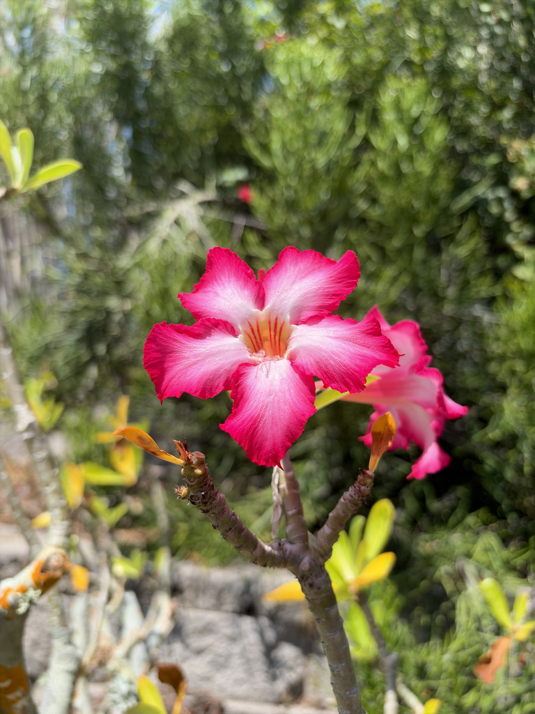

- Despite the name, Desert Rose is no rose at all — it belongs to the same family as Oleander and Plumeria, and shares their hallmark trait: a milky sap loaded with heart-affecting toxins.
- The Hadza people of Tanzania have long used the boiled sap of this plant as their primary arrow poison for hunting large game — the same cardiac glycosides that make the sap dangerous in a garden make it lethal in the field.
- That dramatic swollen trunk is not just for show. The caudex stores water through months of drought, acting as a built-in reservoir that lets the plant flower brilliantly while everything around it is bone-dry.
- In South and Southeast Asia, Adenium has become a bonsai phenomenon: hundreds of named cultivars have been bred for flower color and caudex shape, and a single prize specimen can sell for hundreds of dollars.
Native to a broad arc of arid and semi-arid Africa and the Arabian Peninsula — from Mauritania and Senegal across the Sahel south of the Sahara, east through Ethiopia, Somalia, Kenya, and Tanzania, and north into Saudi Arabia, Oman, and Yemen. In the wild it grows on rocky slopes, sandy savanna, and dry bushland, often in poor soils with intense sun and almost no summer rain.
It is not naturalized in Florida and has no wild populations here. It arrived as an ornamental and is grown as a container plant or in frost-free landscapes across South Florida, prized for its sculptural caudex and bright trumpet flowers.
UF/IFAS rates it for outdoor year-round use only in USDA zones 10B through 12; Manatee County sits at the edge of that range and a hard freeze will damage or kill unprotected plants.
- The genus name Adenium comes from Aden, the Yemeni port city near where the plant was first collected by European botanists; obesum is Latin for fat or swollen, a nod to the plant's most distinctive feature. That swollen base — the caudex — is a water-storage organ shaped by millions of years of drought. A mature plant can go months without water and still push out flowers.
- Adenium sits in the Apocynaceae — the dogbane family — which means it is kin to Oleander, Plumeria, and the milkweeds. The family thread running through all of them is milky, toxic latex and elaborate flower architecture designed to exploit very specific pollinators.
- Adenium's tubular flowers are structured for long-tongued insects, especially hawkmoths, which probe the tube for nectar and carry pollen between plants.
- The plant's toxicity has been put to practical use across Africa for centuries. The Hadza of Tanzania boil the sap into a concentrated black paste and wind it behind arrowheads to bring down buffalo, zebra, and giraffe. The same cardiac glycosides that stop a large mammal's heart in the field are the reason this otherwise beautiful garden plant demands respect from everyone who handles it.
In its native African range the tubular flowers are worked primarily by hawkmoths (family Sphingidae), which have proboscises long enough to reach the nectar at the base of the floral tube; bees and butterflies visit as secondary pollinators during daylight hours. The flower remains receptive for more than 24 hours, supporting both nocturnal and daytime visitors.
In a Florida garden Adenium's value to local wildlife is modest compared with native plants. The flowers do attract nectar-seeking butterflies and bees during bloom periods, but it hosts no documented Florida butterfly or moth larvae, and it provides no fruit for birds or mammals. Plant it for the flowers and the form, not as a wildlife cornerstone.
Grown from seed or stem cuttings; named cultivars and hybrids are typically grafted onto seedling rootstock to preserve flower color and caudex form. Stem cuttings root readily in warm weather in a fast-draining mix, though seed-grown plants often develop more dramatic caudex shapes.
Showy, funnel-shaped to trumpet-shaped blooms up to about 2 inches across, produced in clusters at branch tips. Wild plants are typically pink to deep rose-red with a pale throat; cultivated varieties range from white and cream through salmon, coral, and bicolored. The tubular corolla is structured for long-tongued pollinators.
Pollinated flowers produce paired, elongated follicles (seed pods) that split open to release seeds, each tipped with a tuft of silky white hairs for wind dispersal — the same design seen in milkweeds and other Apocynaceae.
Leathery, dark green, obovate leaves clustered at the tips of the branches, typically 2 to 5 inches long. Leaves drop during cool or dry dormancy and regrow when warmth and moisture return.
The swollen base (caudex) and roots store water and are packed with milky, toxic latex. Growers sometimes 'lift' the roots above the soil surface to display the sculptural root-and-trunk form — a common practice in Florida container culture.
Because of our intense summer rainy season, coastal Florida gardeners often keep Desert Rose in containers or elevated, sharply draining sandy beds to prevent the prized caudex from rotting.
Start at the base: the fat, gray-green swollen trunk is the giveaway from across the garden. Follow the trunk up to the cluster of branches, each tipped with a rosette of dark leaves and, in bloom, a burst of bright trumpet flowers. Look for the narrow paired seedpods on older plants — they split to release silky-tailed seeds.
Do not touch any part of this plant: the milky sap that beads up at any cut or broken stem contains the same cardiac toxins used on African hunting arrows, and contact with skin, eyes, or mouth is dangerous.
Not edible. No part of this plant is safe to consume. All parts contain cardiac glycosides concentrated enough to have served for centuries as hunting arrow poison. See toxicity for details.
Toxic. All parts — sap, roots, stems, leaves, and flowers — contain cardiac glycosides. Ingestion can cause reduced heart rate, low blood pressure, gastrointestinal distress, and serious cardiac arrhythmia. Skin contact with the milky sap can cause irritation and, in sensitive individuals, blistering.
Wear gloves when pruning, repotting, or taking cuttings, and keep sap away from eyes and mouth. Keep children away from the plant. The same toxins have been used to prepare lethal arrow poison across Africa — this is not a plant to handle carelessly.
Toxic to dogs, cats, and horses per the ASPCA. The cardiac glycosides cause vomiting, diarrhea, loss of appetite, depression, and potentially fatal irregular heartbeat. Even licking the plant or sap can trigger poisoning.
If a pet chews on or mouths any part of this plant, contact your veterinarian or the ASPCA Animal Poison Control Center (888-426-4435) immediately. Keep the plant out of reach of all pets.
COLD HARDINESS NOTE: UF/IFAS rates Adenium obesum for outdoor year-round planting in USDA zones 10B through 12. Palma Sola Botanical Park falls in zone 10A, which is marginal. Plants are likely to defoliate or sustain tip damage in a hard freeze; move container specimens indoors or under cover when temperatures are forecast below 35 degrees F.
NOMENCLATURE NOTE: The genus name Adenium is a Latinization of 'Aden,' the Yemeni city near the plant's original collection site. The species epithet obesum means fat or swollen in Latin, referring to the water-storing caudex.


- © Ruby Meador (CC-BY-NC), via iNaturalist
- © Maria Escobar (CC-BY-NC), via iNaturalist